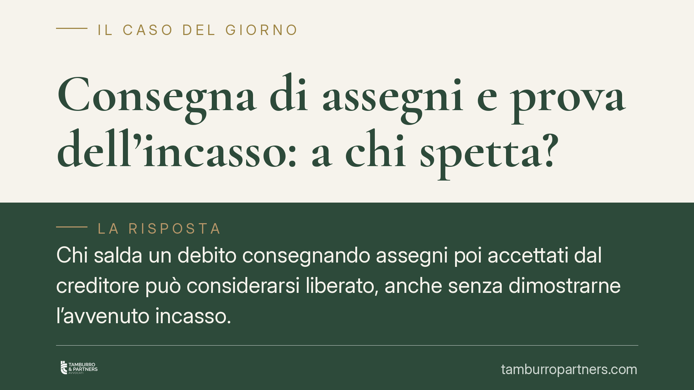

Consegna di assegni e prova dell'incasso: a chi spetta?
Chi salda un debito consegnando assegni poi accettati dal creditore può considerarsi liberato, anche senza dimostrarne l'avvenuto incasso. Un recente orientamento della Cassazione sposta sul creditore l'onere di provare che gli assegni non sono stati riscossi e il perché. Una lettura che incide su contenzioso e gestione dei pagamenti, non solo nei rapporti di lavoro.

Il caso
Il contenzioso nasce in ambito lavoristico: una casa di cura consegna al proprio dipendente alcuni assegni a titolo di pagamento. Il lavoratore li accetta tramite il suo difensore. Più tardi sorge la contestazione sull'effettivo soddisfacimento del credito.
La domanda giuridica è netta: il debitore che ha consegnato assegni accettati dalla controparte deve anche dimostrare che quegli assegni sono stati materialmente incassati? Oppure l'onere di provare il mancato incasso ricade su chi quegli assegni ha ricevuto?
Inquadramento normativo
La consegna di un assegno non equivale, di regola, a pagamento immediato. La giurisprudenza la ricostruisce come cessione di un credito (quello verso la banca) in luogo dell'adempimento, secondo lo schema della datio pro solvendo disciplinata dall'art. 1198 c.c.: il debito originario non si estingue subito, ma solo con il buon fine del titolo, cioè quando l'assegno viene effettivamente riscosso. È il noto meccanismo "salvo buon fine".
Questa figura va tenuta distinta dalla datio in solutum dell'art. 1197 c.c., che è la prestazione diversa accettata dal creditore con effetto immediatamente estintivo. Nella consegna dell'assegno l'effetto liberatorio è, di norma, differito e condizionato.
Il perno sistematico è però l'art. 2697 c.c., che governa la ripartizione dell'onere della prova: chi vuol far valere un diritto deve provarne i fatti costitutivi; chi eccepisce l'inefficacia deve provare i fatti che la fondano. Su questo impianto si innestano i doveri di correttezza e buona fede degli artt. 1175 e 1375 c.c., che impongono a ciascuna parte un dovere di cooperazione nell'esecuzione del rapporto.
Il principio affermato
Secondo l'orientamento della Cassazione, il debitore che ha consegnato assegni poi accettati dal creditore ha compiuto quanto a lui richiesto per adempiere. A questo punto non è lui a dover dimostrare l'incasso, fatto che dipende da un'attività nella disponibilità del creditore.
È invece il creditore, che detiene i titoli e può materialmente presentarli alla banca, a dover provare l'eventuale mancato incasso e le ragioni che lo hanno impedito. Negarlo significherebbe addossare al debitore la prova di un fatto che non controlla, in contrasto con i doveri di correttezza e con la logica dell'art. 2697 c.c.
Perché un caso di lavoro riguarda la contrattualistica
La vicenda origina da un rapporto di lavoro, ma il principio ha portata generale. Tocca il modo in cui si estinguono le obbligazioni pecuniarie e come si distribuisce l'onere probatorio tra chi paga e chi riceve.
Vale quindi per qualsiasi rapporto contrattuale in cui il pagamento avvenga tramite titoli di credito: forniture, compravendite, saldi transattivi, chiusure di contenziosi. Ovunque un assegno sostituisca il contante, la regola sulla prova dell'incasso diventa rilevante.
Implicazioni pratiche
Per chi paga con assegni, la posizione processuale si rafforza: la consegna accettata costituisce adempimento, e non si è tenuti a documentare l'altrui attività di riscossione.
Per chi riceve assegni, l'attenzione deve aumentare. Trattenere titoli senza presentarli, o restare inerti, può tradursi in un onere probatorio difficile da soddisfare in giudizio. La semplice allegazione del "non ho incassato" non basta: va provata, insieme alle ragioni.
Un punto da non confondere
Resta ferma la distinzione tra due situazioni diverse. Un conto è l'assegno coperto che il creditore non ha incassato: qui il discorso sull'onere della prova opera pienamente a favore del debitore che ha consegnato il titolo.
Altro è l'assegno a vuoto, cioè privo di provvista o comunque non pagabile per fatto imputabile al debitore. In questo caso non vi è buon fine e l'obbligazione originaria non si estingue: il debitore resta inadempiente. La regola probatoria non sana la mancanza di copertura.
Cosa fare in concreto
- Chi paga: conservate prova della consegna degli assegni e, ove possibile, dell'accettazione da parte del creditore (ricevuta, scambio scritto, PEC).
- Chi riceve: presentate tempestivamente i titoli all'incasso e documentate ogni passaggio; in caso di mancato pagamento, procurate subito l'attestazione bancaria.
- Verificate la causale: indicate con chiarezza a quale debito il pagamento si riferisce, per evitare contestazioni sull'imputazione.
- In fase di transazione: disciplinate espressamente nel testo se e quando l'effetto liberatorio si produce (alla consegna o al buon fine).
- In caso di contenzioso: impostate la strategia sull'art. 2697 c.c., individuando chi detiene i titoli e chi deve provare cosa.
Contributo informativo a cura di Tamburro & Partners Avvocati. Non costituisce parere legale.
Ogni contratto ha il suo equilibrio.
Se vuoi una revisione delle clausole o una redazione su misura, scrivi allo studio. Ti rispondiamo entro un giorno lavorativo.